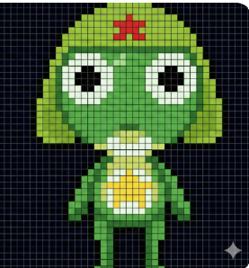

PLAYER 1

SUDA TIPPRASERT
Information System, Business Administration
Rajamangala University of Technology Isan
Verified email at rmuti.ac.th
CITED BY:
114
- RESEARCH INTERESTS -
Computer Programming
Machine Learning
Information Technology
Artificial Intelligence
▶
VIEW FULL PROFILE